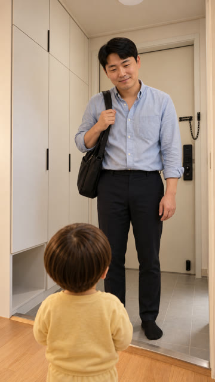
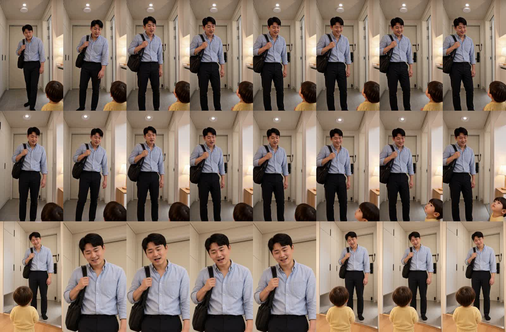

아빠 왔다~ 5컷 — 세 방식 비교
같은 시작 그림(현관 세트) · 같은 대사 «그럼 다시 회사 가서 야근이나 해야겠다…» · 같은 seed. 대사 받아쓰기는 셋 다 정확합니다.
시작 그림(정답)

현관 세트 — 왼쪽 신발장·오른쪽 문
① Omni + 인물 시트 + 시작 그림
닮음 0.25 — 첫 장면부터 다른 복도(오른쪽 조명)
② Omni + 시작 그림 한 장
닮음 0.30 — ①과 거의 같은 다른 복도
③ FL2VA(첫·끝 장면 고정)
닮음 1.00 — 처음·끝은 현관 세트 그대로. 단 중간(약 1~4초)에 H3가 아빠 클로즈업으로 혼자 잘라 들어감(배경 베이지 벽)
0.8초 간격 (위 ① · 가운데 ② · 아래 ③)

보이는 것
- ①② Omni 는 인물 시트가 있든 없든 이 컷에서 시작 그림을 버렸습니다 — 원인은 «두 번째 그림»이 아니라 Omni 가 첫 장면을 보장하지 않는 것.
- ③ FL2VA 는 처음·끝 장면이 현관 세트 그대로 고정됩니다.
- ③의 약점: 말하는 동안 H3 가 스스로 클로즈업으로 잘라 들어갔다 나옵니다(10-02 청바지 편에서도 본 FL2VA 습성 — «처음부터 끝까지 같은 넓은 화면, 컷·당겨 찍기 없음» 문장으로 고쳤던 기록). 목소리는 들어 보시고 판정 부탁드립니다(FL2VA 한국어는 먹먹했다는 10-04 기록).